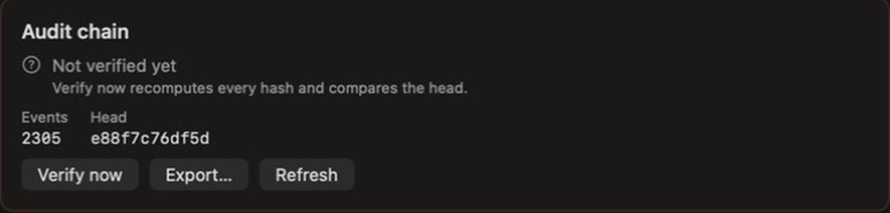

ACTIVITIES /
Ten activities.
One foundation.
Agent, Swarm, Develop, Analyze, Lab, Audit, Browser, Devices, Media and Home: what each does today and where it stops.
Kiln has ten activities, declared once in the activity registry. The sidebar order is also the shortcut order: ⌘1 to ⌘9, then ⌘0. The command palette (⌘K) reaches them too. Each activity opens with the same header and tab strip, and the agent panel stays beside every activity except Agent.
Home ⌘1
Working
The overview. A get-started checklist (connect a model, choose a project folder, run a first supervised task) and a tile for every activity with its shortcut.
Limits. Orientation only; it does no work of its own.
Agent ⌘2
WorkingModel dependent
Converse with a model that has tools. Pick a model, toggle Agent mode and choose a profile (Research Assistant, Coding Agent or Workstation Agent). The composer carries a Permissions menu (Ask, Auto, Bypass), a context meter with compaction, and voice controls. Finished runs collapse to a one-line summary of the tool calls made.
Limits. Small local models often fail tool use. Context compaction and its interface were merged but not visually verified by their author; voice was not tried with a real microphone in QA.
Swarm ⌘3
WorkingNeeds evidence
Give a goal to a team of agents. A planner produces a plan (or falls back to research, implement, review), workers run in parallel over a coordination bus, blockers are reported rather than retried, and every worker call passes through the same gates as the Agent.
Limits. A hosted model completed a researcher, implementer, reviewer job; a small local model failed. Correctness always needs checking against evidence. The agent has no top-level tool yet to create, inspect or cancel a run.
Develop ⌘4
WorkingNot Xcode
A source editor with a file navigator, tabs and split pane, Open Quickly, find, line numbers, code folding, multi-cursor and Git gutter markers; a Swift and C-family language server (sourcekit-lsp) for diagnostics, go to definition and completion; Build, Test and Run with scheme pickers; an LLDB launch debugger with breakpoints, stepping, stack, locals and console. Also a terminal, Git, search, and the MCP tab where Kiln serves and consumes MCP tools.
Limits. No debugger attach, conditional breakpoints or watches, no SwiftUI previews, no language server for other languages, no stage-hunk or blame UI.
Analyze ⌘5
Native inspectionGhidra needs setup
Reverse engineering. Import a binary (Mach-O inspection and a labelled linear disassembly fallback are built in) or use the package downloader. With a separately installed Ghidra, Analyze recovers functions, pseudocode, basic blocks and references; radare2 can also be selected. Browse functions, callers and callees, rename, comment and bookmark with undo and redo, scan for crypto constants, auto-decrypt, find gadgets, carve formats, scan entropy and rules. Kiln never runs the target binary.
Limits. Ghidra and Java are separate software; the cipher classifier is a placeholder, not a trained model. Device bench operations have no agent tool.
Lab ⌘6
Training verifiedGUI QA ongoing
Datasets, models, experiments, a playground, evaluation and a red-team tab. Train text, tabular and image classifiers with Create ML; from-scratch small language models, LoRA fine-tunes and distillation with MLX; evaluate (accuracy, F1, BLEU, ROUGE) and export Core ML or MLX packages. The agent can run the same lifecycle through lab_* tools.
Limits. Smoke runs establish that execution works, not model quality. The complete GUI lifecycle for every training type, GGUF export and comparison are not certified.
Audit ⌘7
Working
Shows what agents did and whether the record is intact. Agent runs, approvals and tool results are stored in a hash chain; Verify now recomputes every hash and compares the head, and the chain can be exported.
Limits. Agents cannot query the audit record yet; text content is not written to the audit log.
Browser ⌘8
WorkingAuth unverified
A tabbed WebKit browser with a Kiln-only persistent data store. The address bar opens https hosts or searches DuckDuckGo; tabs, find in page, and downloads that land in the package-intake folder with an Analyze in Kiln button (never auto-imported). The agent can open, read, screenshot and list tabs, and click or type with approval. Page content is labelled untrusted.
Limits. Popups with an opener, JavaScript dialogs, HTTP authentication, history and bookmarks are not done. Password autofill and passkeys are not verified, and the Apple entitlement for browser passkeys has been requested but not granted.
Devices ⌘9
WorkingNo Apple input
iOS simulators and Android emulators in one list: boot and shut down, live screenshot view, install, launch, open a URL, record video and read logs, through xcrun simctl and adb/emulator. On Android, clicking taps and dragging swipes. A missing platform shows a setup card; Kiln never downloads Xcode, SDKs or system images.
Limits. Tap, swipe and typing on an Apple simulator are not possible through simctl and the tool says so. Windows and Linux guests are a design only.
Media ⌘0
WorkingImage generation limited
A viewer for video (scrub and 0.5 to 2x speed), zoomable images and audio with a waveform, plus a gallery of generated items. Text to speech to a file and speech to text from a file work; a real MP4 played and a speech round trip returned the spoken sentence.
Limits. Image generation uses Apple Image Playground when this Mac has it, otherwise a custom OpenAI-compatible endpoint that is unverified against a live service. With neither, the call fails and says why. Deleting items has no agent tool.
Screenshots
Captured from real runs of the preview build.


Shown limits come from known issues and the current-state record. Features still being built are on the roadmap, not here.